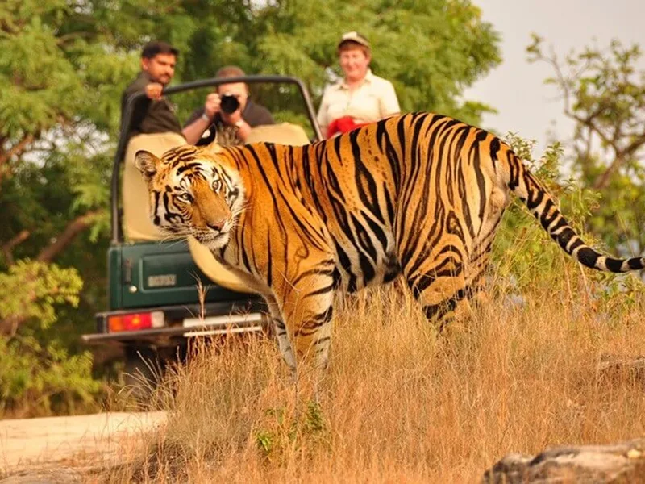
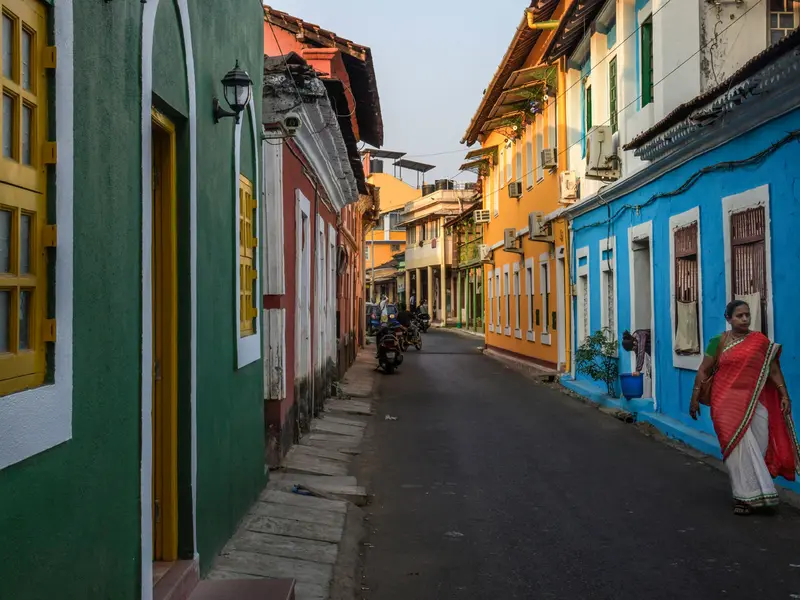
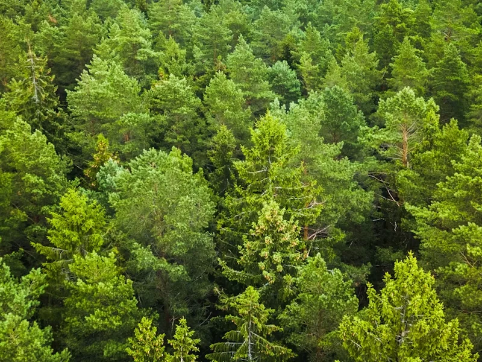
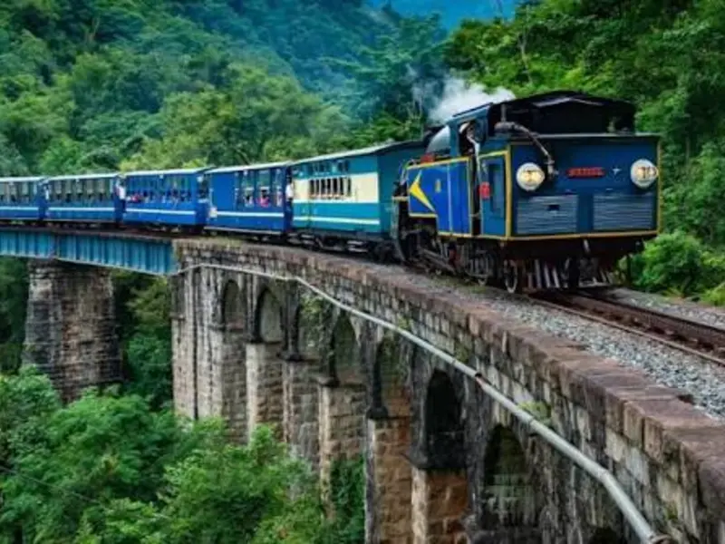

Bandhavgarh & Kanha: Tiger Country Proper
Six nights and six safaris across Bandhavgarh and Kanha, the two parks where tiger sightings are earned by density, not luck, with naturalists who read the forest, not just the radio.
Here is the honest arithmetic of tiger tourism: one park, two safaris, and you are gambling. Two parks, six safaris, and the odds move firmly your way, Bandhavgarh has among the highest tiger densities in India, and Kanha is the sal-forest landscape the word "jungle" was practically invented for. Most itineraries give you one park and hope. We give you both, and we book the premium zones early, because in tiger country the zone permit decides more than the vehicle does.
What we do differently is refuse to run the safari as a tiger-or-nothing chase. Our naturalists teach you to read alarm calls, the chital's bark, the langur's cough, so that when the forest goes quiet and then erupts, you understand what is happening before the cat walks out. Kanha adds the barasingha, the swamp deer that exists nowhere else and was pulled back from thirteen animals to a thousand; that story alone is worth a safari. Between drives there are proper rests, good meals, and evenings by the fire with the day's photographs.
Fair warning, given plainly: safari mornings start in the dark and winter dawns in open jeeps are genuinely cold. The pace between drives is gentle; the alarm clock is not. This journey lands hardest for families with children old enough to hold a silence, we say eight and up, firmly, and for anyone who has waited a lifetime to see a wild tiger and wants the odds handled professionally.
Day by day
- Day 1
Arrive Jabalpur, drive to Bandhavgarh by late afternoon; briefing over dinner, what the alarm calls mean. Easy on purpose.
- Day 2
Dawn safari in Bandhavgarh; long rest and lunch; afternoon safari, back at dusk.
- Day 3
Dawn safari; late morning visit to the ancient fort hill and the reclining Vishnu if permits allow; afternoon free or optional third drive.
- Day 4
Unhurried morning, then the drive to Kanha through farm country; evening at leisure.
- Day 5
Dawn safari in Kanha's sal forest, barasingha meadows; rest; afternoon safari.
- Day 6
Final dawn safari, the one that so often delivers; afternoon at the Kanha museum and a slow last evening by the fire.
- Day 7
Drive to Jabalpur or Raipur for onward flights.
What’s included
- All accommodation at wildlife lodges
- All breakfasts and dinners
- Six shared-exclusive jeep safaris with park fees, permits and naturalist
- Private vehicle for all inter-park transfers
- Warm blankets and hot water bottles on winter dawn drives, small thing, changes everything
- Zubilant escort throughout
- Flights to Jabalpur or Raipur
- Lunches
- Camera fees where the parks levy them
- Optional extra safari on Day 3
- Travel insurance
Where you stay
Established wildlife lodges near the park gates that we have used for years, the kind run by people who ask about your sightings at dinner and mean it. Comfortable rooms, honest food, early breakfasts that appear without complaint at five in the morning.
Who it’s for
Wildlife lovers, photographers, and families with children aged eight and above who can sit still when it matters. Not for children under eight, park rules and forest silence both argue against it, and not for anyone unwilling to wake in the dark six mornings running. The tiger does not keep office hours.
At a glance
The facts most itineraries leave out. We print them because they are what decides whether this trip suits your group.
- Max altitude
- 800 m
- Longest drive
- 5 hours (Bandhavgarh–Kanha)
- Walking
- under 1 km a day, but jeep tracks are rough and seats jolt
- Lift at every hotel
- NO (ground-floor cottages standard)
- Nearest hospital
- district hospital, Umaria, 32 km from Bandhavgarh gate
You might also like.

Goa Beyond the Beach
Five nights of the Goa most visitors never find, the Latin quarter of Fontainhas, spice farms, ferry-only Divar island and the old churches, with beach afternoons kept sacred.

Coorg & Mysuru: Coffee Country
Five nights from Mysuru's illuminated palace to the coffee estates of Coorg, with elephants at Dubare and mornings that smell of roasting beans.

The Nilgiris by Toy Train: Ooty, Coonoor & the Blue Hills
Five nights in the Nilgiris built around the UNESCO-listed mountain railway, ridden the right way, in the right direction, with tea gardens, colonial Ooty and quiet Coonoor.